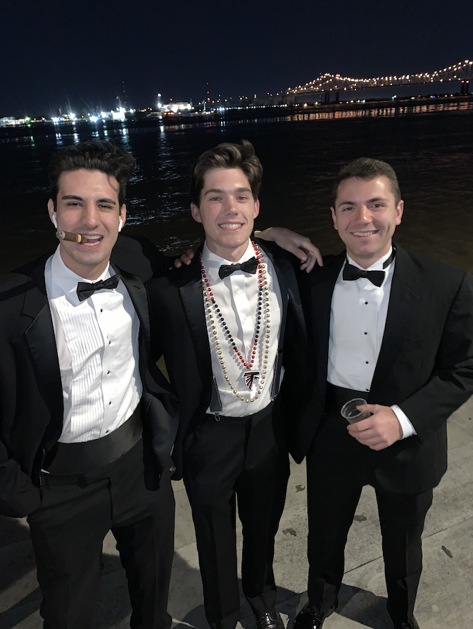

About Me

Hello! My name is Matt Stalzer (I'm on the right in the pic) and I am from Peachtree City, GA. During normal times, I am a student at UGA and will start my senior year this coming fall. I am a finance major hoping to land a job in the FinTech industry. Those other two guys and I were supposed to study abroad this summer before corona changed our plans. If you told me two months ago that I would be making this portfolio, I probably would not have beleived you. I enrolled because many people older than I have mentioned how valuable this skill is.
I have never felt as lost in school as I feel in these first few weeks. Learning this new of a subject at a quick pace is definately a challenge I have not yet